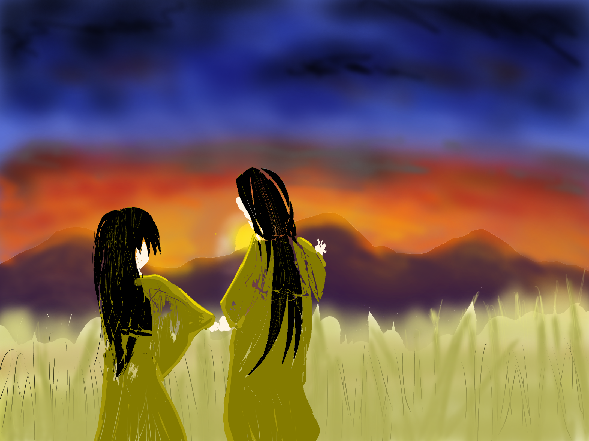

用語集
【 ATMOSPHERE 】
酒呑童子(しゅてんどうじ)
人物
元々は大江山に住み着いている鬼だったが，最近は黄泉の国にいるらしい。性格は頑固で豪傑。腕っぷしだけなら無敗の鬼王。（井の中の蛙，大海を知らず）
【 陰鬱な世界を謳歌する 】
能登まさし（のとまさし）
人物
記憶を失っているはずなのに，そこが幻想世界だと気づく頭のおかしな少年。シリーズ全体の中でも稀有なほどに捻くれている。
霊安神社（れいあんじんじゃ）
世界
歴史ある平安時代からの神社とも、ごく最近にできた神社とも言われる。二十年前の郷土資料には載っていないのに、石造の本殿は明らかに古来からの自然信仰を思わせる。とにかく謎も苔も多い所。参拝者は見かけない。
【 散開怪花 】
凪航平（なぎこうへい）
人物
伝承に魅入られた不憫な少年。幼馴染の麗花とも上手く馴染めず家庭は崩壊している。ちなみに寝つきが悪い。
凪信介（なぎのぶすけ）
人物
航平の父親。貸本屋の店長で、雄介とは大学からの付き合いだそうだ。イカれ眼鏡。
凪麗花（なぎれいか）
人物
麗花か麗華か誰にもわからない。趣味は詐欺と歴史改変と凶悪事件。嫌いなことは真実。最近話題の30代である。
凪有希（なぎゆき）
人物
小さい頃に交通事故で死んだらしい。最近では、物置に隠れている姿が発見された。かき氷が嫌い。
雄介（ゆうすけ）
人物
旅行ができる怪鬼道具『ユーフィニティ』の発見者。謎は多く，それと同時に髭も多い。ちなみに蛾にすかれる体質を持っているらしい。
ユーフィニティ
概念
雄介が発見した旅行ができる怪鬼道具。一度使うと大抵見失う。
白狼神社（はくろうじんじゃ）
世界
登尾山の山頂にある神社の一つ。登尾山は古来から霊験あらたかな霊山だったとかなんとかで変な神社が多い。
ちなみに二百年前の御霊会の時に作られたおみくじが残っているらしい。紙は湿気に弱いのに。
ちなみに二百年前の御霊会の時に作られたおみくじが残っているらしい。紙は湿気に弱いのに。
【 偏差値71の妖怪怪異譚 】
酒呑童子(しゅてんどうじ)
人物
酒と本にまみれた拝殿に供えられた鏡。その裏に居るとか居ないとか。大天狗達に崇められている。
伊吹童子(いぶきどうじ)
人物
鬼神の頭領。極めて聡明で器も大きい。欠点は鬼に生まれたこと。また、無口なので影が薄い。いや、影が濃すぎるのかも。
茨木童子(いばらきどうじ)
人物
半身の鬼神。 新参者を嫌うようで、気に入らない奴には死気を送るようだ。見くびれない。
荊芥爺(けいがいじい)
人物
鬼の里の長老者。最近は物忘れがひどいようで，数百年前の朝に何を食べたかさえ忘れてしまったそうだ。鬼なんて屍人しか食べないだろうに。
猫又(ねこまた)
人物
尾が三本に分かれた猫ちゃんだけど，性格は荒く，人を見つけると後ろからこっそり忍び寄って食い殺す。三千歳超えの老いぼれ。
終焉帝(しゅうえんてい)
人物
月浪フェンリルとも言う。ただの荒野にわざわざ国家を建てたお馬鹿さん。ちなみにその場所は月面らしい。また，月浪国家の国王マーナガルムの実の父でもあるようだ。親子揃って体毛が白い。
封開(ふうかい)
人物
原始帝に使える暴力女。耳が非常に良く、過去の音の残滓まで聴くことができるようだ。性格は短気で極めて凶暴。妖怪のようにしか思えないが、これでも人間なんだってよ。
祝詞言葉
概念
どこかの国の祝詞言葉。これを唱えると，悪鬼は興奮し，亡霊は成仏するそうだ。そうだ，全文を載せよう。
払へ給へ清め給へ神ながら幸い給へ
守り給へ
払へ給へ清め給へ神ながら幸い給へ
守り給へ
魔碑（まひ）
世界
最も巡礼するのが難しいとされる筋金付きの心霊スポット。なんと月面にあるらしい。目撃証言は極めて少なく、どんな物かさえ世に回っていない。
【 ？ 】
七人の雲
概念
悪霊跋扈の時代に空を総べていた７人の偉大な神格。しかし最近はそうでもないと言う。代名詞は陰の豪雷。
石羽神
人物
空の子。薄明の季に神留まりあそばした。
高千穂村道中
世界

神の地、高千穂村に向かう親子。
夕暮れが世界を染める時、人も神も物怪も等しく溶る。
その刹那を探って親子は道を見つける。
夕暮れが世界を染める時、人も神も物怪も等しく溶る。
その刹那を探って親子は道を見つける。
祝詞言葉
概念
どこかの国の祝詞言葉。これを唱えると，悪鬼は興奮し，亡霊は成仏するそうだ。そうだ，全文を載せよう。
傾げても畏め 黒羽の大神
世の空の下に消える世の歪み
禊ぎ祓へ給いし時に 成りませる単一の魂
諸々の禍事、罰、穢れ あらむをば
求め追い抜き貫き給へと 申すことを求めんと
畏み畏み申す
傾げても畏め 黒羽の大神
世の空の下に消える世の歪み
禊ぎ祓へ給いし時に 成りませる単一の魂
諸々の禍事、罰、穢れ あらむをば
求め追い抜き貫き給へと 申すことを求めんと
畏み畏み申す
怪異譚？ A.陰鬱な花が開いたのです
概念
黒羽録の正史の二つ名だそうだ。おどろおどろしい世界観に反し，二つ名自体ははっちゃけている。
夕日ヶ丘の民謡（ゆうひがおかのみんよう）
概念
地元では夕日が落ちる山として有名な香陽山のふもとで最初に歌われた民謡。最初に詠ったのは地元の俳諧師である、能登権左武郎（のとごんざぶろう）と伝えられている。ここに全文を載せる。
夕焼け小焼けの夕空に
ススキを握る童子の背
転がる石に動かない石
時は過ぐれど日は帰らず
かくて老は郷を思う
夕焼け小焼けの夕空に
ススキを握る童子の背
転がる石に動かない石
時は過ぐれど日は帰らず
かくて老は郷を思う
宵の彼岸（よいのひがん）
世界
自殺の名所だった場所。白波の飛沫がかかる崖の上には彼岸花が咲いていて、近年ではそれを売りに観光地化された。
しかし人の往来が増え自殺を図る人が減った途端、咲く花の数は急激に減った。自殺者の魂を養分にしていたからという説もあるが、このままでは観光客が訪れなくなってしまう。
町おこしの観点から東野町長は次にどのような行動をとるのだろう。
［写真を見る］
しかし人の往来が増え自殺を図る人が減った途端、咲く花の数は急激に減った。自殺者の魂を養分にしていたからという説もあるが、このままでは観光客が訪れなくなってしまう。
町おこしの観点から東野町長は次にどのような行動をとるのだろう。
［写真を見る］
黒羽録（こくうろく）
概念
暮葉畏啓の手掛ける一連の作品群の総称。独自の都市伝説、妖怪怪異、世界観が展開される。
屈露拝禊
世界